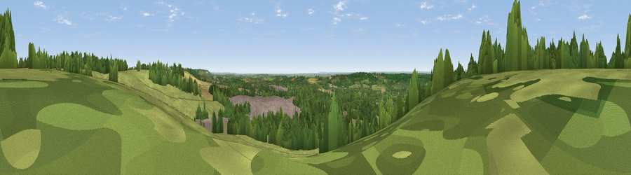

Viewpoint near Harrietsham
#14798 in England · top 11% of its area beats it · near Harrietsham · access?Where it is
The exact computed spot (TQ 88325 53675). Click the marker for map links.
Public access: no public right of way or access land is recorded at this exact spot — it may be on private land. Computed from Natural England's CRoW access layer and OpenStreetMap rights of way — not the legal definitive map. Always verify locally.
The view, rendered

A 360° render of this exact spot computed from the terrain model, tree cover and land cover — summer colours, afternoon light, calibrated against photographs of famous viewpoints. Real trees, hedges and buildings will differ in detail.
The panorama
Grey silhouette: terrain skyline in each direction (720 bearings, Earth curvature and refraction included). Dashed green: skyline with trees (+15 m) and buildings (+8 m) as obstacles. Blue strip: how far the ground is visible on each bearing.
Where the view opens
Wedge length = distance to the farthest visible ground on that bearing (vegetation-aware). Rings at 10, 25 and 50 km.
What fills the view
41% grassland · 31% woodland · 17% cropland · 11% built-up
Angular shares of the visible panorama (visual magnitude), not map area. Landscape diversity 0.55 (0–1 Shannon).
Key numbers
More beautiful places nearby
The staircase of upgrades: each row has a higher view potential than everything closer. Driving times are estimates from straight-line distance, calibrated against real road routing — check an actual route before setting out.
| Place | Direction | Drive | Score |
|---|---|---|---|
| Viewpoint near Hollingbourne | NW · 5 km | ~11 min | 62.3 |
| Viewpoint near Charing | ESE · 7 km | ~15 min | 68.6 |
| Viewpoint near Westwell | ESE · 11 km | ~21 min | 72.2 |
| Viewpoint near Lympne | SE · 28 km | ~45 min | 72.6 |
| Tolsford Hill | ESE · 31 km | ~49 min | 77.9 |
| Viewpoint near Capel-le-Ferne | ESE · 39 km | ~58 min | 80.2 |
| Viewpoint near Willingdon | SSW · 60 km | ~82 min | 83.4 |
| Wilmington Hill | SW · 60 km | ~83 min | 85.4 |
51.25114, 0.69720 · source: screening · position refined by local search. Computed location — check access rights before visiting.